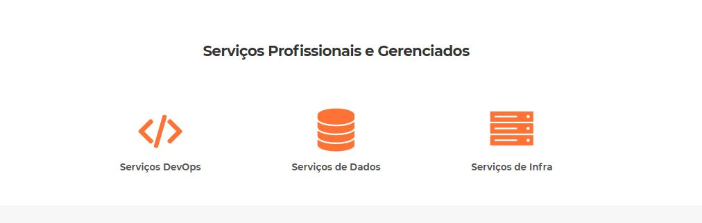

Redução de custos
Todos os sistemas baseados em cloud computing ficam disponíveis online. Isso significa que não é necessário gastar com a compra e a manutenção de equipamentos especializados para a instalação de programas — é possível acessá-los de qualquer dispositivo que esteja conectado à internet. Além disso, a maioria dos serviços de cloud computing permite que você pague conforme o que sua empresa utilizar. Ou seja, você não precisa se comprometer com recursos que não pretende usar, ou por mais tempo do que o necessário.
Maior flexibilidade do negócio
Os provedores de cloud computing oferecem todo o suporte necessário para a escalabilidade do seu negócio, sem que você precise modificar sua infraestrutura de TI. Como mencionamos, o acesso aos serviços é pago de acordo com sua utilização. Logo, se a empresa precisa multiplicar ou diminuir sua produção, basta atualizar seu plano com as novas especificações.
Otimização dos processos de TI
O cloud computing é um grande auxílio para os profissionais de TI, pois automatiza várias atividades que costumam ser feitas manualmente. Os sistemas são atualizados, gerenciados e mantidos pelos próprios provedores do serviço, sendo que os resultados desse trabalho tomam apenas alguns segundos do tempo da sua empresa.Além de economizar um tempo precioso da sua equipe, isso evita aborrecimentos com tarefas paradas por conta de sistemas inteiros fora do ar.
Aumento de segurança
A segurança dos dados é uma das maiores preocupações quando se fala em armazená-los online. Porém, a verdade é que os serviços na nuvem oferecem muito mais segurança do que o sistema interno convencional de qualquer empresa, que ainda precisa dividir seus recursos limitados entre inúmeros outros problemas da área de TI.Os provedores de cloud computing trabalham continuamente pela privacidade das informações de seus clientes, pois é isso que garante sua permanência no mercado. Os sistemas oferecem uma série de proteções, como criptografia de ponta a ponta, autenticação de dois fatores e controle de acesso, sendo que os administradores da conta também podem adicionar suas próprias medidas de segurança.
Prevenção contra perdas
Um outro recurso de segurança presente nos sistemas em nuvem é sua proteção contra perdas causadas por desastres ou por erros humanos. Em sistemas tradicionais, é necessário fazer backups constantemente para manter os dados minimamente protegidos. No cloud computing, isso é de inteira responsabilidade de seus provedores. Todos os arquivos armazenados na nuvem permanecem acessíveis, ainda que seus equipamentos falhem ou sejam roubados. Como os dados são movidos para diversas localidades ao redor do mundo, eles permanecem protegidos em caso de desastres naturais que danifiquem os dispositivos ou as redes de energia. Apesar de todos esses benefícios do cloud computing para empresas, muitas ainda preferem continuar presas ao convencional. Essa é a escolha delas, mas sabemos que as organizações que não evoluem com as transformações digitais estão destinadas a ficar em desvantagem em relação a suas concorrentes. E você, de qual lado prefere ficar?

O que é a escalabilidade em Cloud Computing?
A escalabilidade diz respeito à capacidade de um sistema se expandir sem perder o desempenho. Simplificando, se um sistema de computação em nuvem (redes, armazenamento, servidores, aplicativos e serviços) puder responder rapidamente para atender a novas demandas – em tamanho ou volume – ele é escalável.
Por que investir em escalabilidade de dados em Cloud Computing?
A escalabilidade é uma ferramenta valiosa a para organizações de todos os tipos e tamanhos. Atualmente, responder de forma rápida a todos os tipos de mudanças é essencial. Pois, isso garante a produtividade dos colaborares, uma boa experiência do cliente e o crescimento da operação.
Para muitas empresas, o futuro pode ser, em grande parte, previsível. No entanto, isso não significa que não haverá pontos fora da curva ao longo do caminho.
Os varejistas, por exemplo, conseguem prever um aumento de demanda durante a Black Friday ou próximo ao Natal. No entanto, é um pouco provável que eles consigam prever o fechamento de um concorrente e – crucialmente – tirar proveito da situação.
Assim, as organizações que não contam com a escalabilidade em Cloud Computing estão fortemente ligadas às restrições físicas, como servidores e storages, etc. Muitas vezes, esses pontos são grandes impeditivos na concretização de novos negócios ou no aproveitamento de oportunidades inesperadas.
Por outro lado, com a computação em nuvem, essas restrições são substituídas por uma infraestrutura que pode aumentar ou diminuir e adaptar-se em harmonia com as necessidades da empresa. A elasticidade em Cloud Computing torna mais fácil reagir rapidamente todo tipo de evento. A grande vantagem é que você só paga pelos recursos que utilizar, quando utilizar.
Dessa forma, se sua empresa deseja se manter competitiva no mercado, precisa começa a investir em escalabilidade em Cloud Computing agora mesmo!
Quais são os tipos de escalabilidade de dados em Cloud Computing?
Basicamente, existem dois tipos de escalabilidade em Cloud Computing: a vertical e a horizontal.
Escalabilidade vertical
Refere-se à adição de mais recursos ao servidor conforme a demanda. Esse tipo de escalabilidade é mais comumente usado em aplicativos e produtos de médio porte, bem como em pequenas e médias empresas.
Escalabilidade vertical geralmente significa atualização do hardware do servidor. Alguns dos motivos mais comuns incluem o aumento de IOPS (operações de entrada / saída), amplificação da capacidade da CPU / RAM e da capacidade do disco.
Escalabilidade horizontal
O dimensionamento horizontal envolve adicionar mais unidades de processamento ou máquinas físicas ao seu servidor ou banco de dados. Isso envolve aumentar o número de nós no cluster e reduzir as responsabilidades de cada nó membro, expandindo o espaço principal e fornecendo pontos de extremidade adicionais para novas conexões.
Embora isso não altere a capacidade de cada nó individual, a carga diminui devido à distribuição entre nós de servidor separados.
Alguns dos motivos pelos quais as organizações devem escolher escalar horizontalmente incluem o aumento da simultaneidade de E/S, a redução da carga nos nós existentes e o aumento da capacidade do disco.
Como a escalabilidade pode ajudar em momentos de picos de acesso?
Tradicionalmente, um dos grandes problemas das empresas é lidar com picos de acesso. Muitas vezes, esses eventos específicos acabam gerando instabilidade, lentidão e até mesmo inacessibilidade.
Com a nuvem esse problema pode ser facilmente resolvido. Pois, recursos de processamento, memória RAM, espaço de disco e até mesmo largura de banda podem ser dimensionados de forma super ágil ou até mesmo automática.
Assim, as aplicações de sua empresa podem funcionar de forma estável e fluída 100% do tempo. Dessa forma, além de aumentar a satisfação dos usuários, sua empresa otimiza recursos e auxilia na minimização de custos, uma vez que você só paga pelo que utilizar.
.jpg)